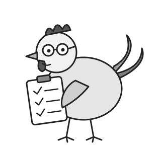
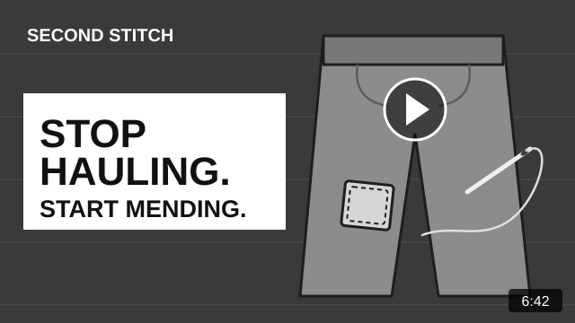
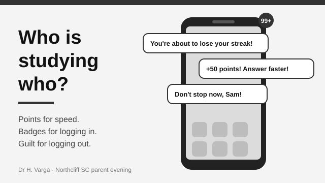

Practice Articles for Analysis
On this page
Four practice tasks in the format of Section C of the English exam. Each one has its own instructions, task and background information, followed by the persuasive text and its visual. Allow about an hour for each: roughly five minutes planning, 50 minutes writing and five minutes proofreading. The people, places, publications and survey figures in these tasks are fictional.
Scenario 1: Backyard hens
Section C – Analysis of argument and language
Instructions
- In this section, you are required to analyse the use of argument(s) and language to persuade an intended audience to share the point of view expressed in an unseen persuasive text.
- Read the background information below and the material that follows, and write an analytical response to the task.
- For the purposes of this task, the term ‘language’ refers to written and spoken language, and ‘visuals’ refers to images and graphics.
- This section is worth one-third of the total marks for the examination.
Task
Write an analysis of the ways in which argument(s), written and spoken language, and visuals are used in the material below to try to persuade the intended audience to share the point of view presented.
Background information
The Greenhill Gazette is a free monthly newsletter that is delivered to every home in the small country town of Greenhill. Local clubs and community groups often use the newsletter to share news and information with residents. The following article was written by Margaret Kovac, who has been the secretary of the Greenhill Poultry Club for more than ten years.
Before you bring home the girls:
a few honest words about backyard hens

Over the last few years it seems like every second backyard in Greenhill has a chook pen in it. When I joined the Greenhill Poultry Club eleven years ago, we had nine members and most of us had grey hair. Today we have over sixty, and plenty of them are young families who have never looked after anything bigger than a goldfish. I think that’s wonderful. I also think it’s time someone said a few things that don’t make it into the lovely photos on Instagram.
First, the good news. Hens are funny, friendly little creatures, and they’ll happily follow you around the garden in case you’ve got something for them. A healthy hen will give you four or five eggs a week in her best years, and there is nothing quite like a fresh egg with a deep orange yolk on a Sunday morning. Hens will eat your vegetable scraps (which means less going in the bin), scratch out the weeds and turn the whole lot into some of the best fertiliser you’ll ever put on your garden. Kids love them. So do grandparents.
So what’s the catch?
A chook is not a kitchen appliance
I’ve lost count of the number of times someone has rung me in March asking if the club can ‘take’ their hens. Usually the story is the same. The family bought three young pullets in spring, the kids named them, everyone was very excited – and then winter came, the eggs slowed down and suddenly nobody wanted to go out to the pen at six o’clock in the dark and the rain.
Here’s something those videos don’t tell you: a hen can live for eight years or more, but most only lay well for the first two or three. After that you have a pet that eats, needs cleaning up after and gives you very little back. If you aren’t prepared to look after her for the long haul, please don’t get her in the first place. Just like a dog, a hen is a commitment, not a weekend project.
Do your homework
Before you buy anything, ring Greenhill Shire Council or have a look at their website. There are rules about how many birds you can keep (in most residential streets here the limit is six), how far the pen has to be from your neighbour’s fence and, yes, roosters are a firm no in town. Nobody wants to be the reason the whole street gets woken up at 4.45 am.
You’ll also need to think about:
- a proper fox-proof pen with a roof (foxes are out at dusk and they are a lot cleverer than you’d think)
- somewhere dry and sealed for the feed, because if you leave pellets lying around you’ll soon have rats as well as chickens
- who will feed and water them when you go away at Christmas
- what happens when one of them gets sick – and they do.
Not many vets in our area will see poultry, so it pays to find out which ones do before you need them.
What will it really cost?
People often tell me they’re getting chooks to save money on eggs. I hate to be the one to break it to you, but that’s not how it works – at least not at first. A decent fox-proof coop will set you back anywhere from $400 to well over $1000 (the cheap flat-pack ones from online shops tend to fall apart after a winter or two – ask me how I know). Then there’s the feeder, the waterer, straw or wood shavings for bedding, worming and lice treatments, and of course the feed itself. Three hens will get through a 20-kilogram bag of layer pellets about every five or six weeks, and that’s around $35 a bag at the produce store on Main Street at the moment.
When one of our members, Danny, sat down and did the sums on his first year, he worked out that each of his eggs had cost him about $1.40. He had a good laugh about it at our March meeting, and to be fair to Danny, he still says it’s the best money he’s ever spent. But go in knowing the numbers.
Have a word with the neighbours
This one costs nothing at all. Before the pen goes up, pop next door and let them know what you’re planning. Most people are happy to have hens nearby, especially if there’s the odd half-dozen eggs coming their way over the fence. What they don’t like is finding out from the smell on a hot day in January.
Keep it clean
Chickens can carry salmonella even when they look perfectly healthy. That doesn’t mean you should panic, but it does mean washing your hands every time you’ve handled them or their eggs, keeping the pen away from where little ones play and not letting the birds wander through the kitchen (I’ve seen it happen!). Cuddling is fine. Kissing is not.
The rewards are real
I don’t want to put anyone off. Some of my happiest hours are spent sitting on an upturned bucket with a cup of tea, watching my girls have a dust bath in the sun. My granddaughter collects the eggs every Saturday and writes the totals on a chart on our fridge – last year we got to 1104. Keeping hens has taught her more about where her food comes from than any school excursion ever could.
But the families who get the most out of it are the ones who go in with their eyes open. They’ve done the planning, they’ve spent a bit more on a good pen than they really wanted to, and they know what they’re signing up for.
Come and have a chat
If you’re thinking about getting hens, the Greenhill Poultry Club meets on the first Sunday of every month at the Scout Hall on Pine Street from 10 am. Bring your questions, have a look at some of our members’ set-ups and maybe even hold a chook or two before you make up your mind. Membership is $20 a year and the scones are free.
Do it once and do it right – your hens will thank you for it.
Scenario 2: Mending, not hauling
Section C – Analysis of argument and language
Instructions
- In this section, you are required to analyse the use of argument(s) and language to persuade an intended audience to share the point of view expressed in an unseen persuasive text.
- Read the background information below and the material that follows, and write an analytical response to the task.
- For the purposes of this task, the term ‘language’ refers to written and spoken language, and ‘visuals’ refers to images and graphics.
- This section is worth one-third of the total marks for the examination.
Task
Write an analysis of the ways in which argument(s), written and spoken language, and visuals are used in the material below to try to persuade the intended audience to share the point of view presented.
Background information
Buying second-hand clothes from op shops and online marketplaces has become very popular, and many people share videos of their ‘hauls’ (large amounts of clothing bought in one trip) on social media. Second Stitch is a small clothing repair and alterations studio in the coastal town of Kestrel Bay. Its owner, Jonah Petrakis, posts short videos about mending clothes and has a large online following. The text below is the transcript of one of his videos. The image is the video’s thumbnail.

Why your thrift haul might be part of the problem
Hey everyone, Jonah here from Second Stitch. Before we get into today’s video, can I just say thank you – we hit 40,000 followers last week, which is honestly a bit mad for a guy who sews patches onto jeans in a shop the size of a garage. So, thank you.
Okay. Today I want to talk about something that’s been bugging me for a while, and I know some of you aren’t going to love it.
Hauls.
You know the videos. Someone goes to the op shop, or onto one of the second-hand apps, and comes home with five or six bags of stuff. They hold everything up to the camera one at a time and say, ‘I don’t know if I’ll actually wear this, but it was only five dollars!’ And everyone in the comments goes, ‘Love this, so sustainable!’
I used to make those videos. I’m not going to pretend I didn’t.
But here’s what changed my mind. About a year ago a woman came into the shop with a coat. A beautiful old wool coat that had belonged to her dad – probably fifty years old. One of the pockets had ripped away and the lining was gone at the elbows. It took me about three hours to fix, and when she picked it up she cried. Actually cried. And I remember thinking, when was the last time anything in one of my hauls made somebody feel like that?
Look, second-hand is better than new. I’m not arguing with that. Every piece of clothing that gets worn again is one less that ends up in landfill, and one less that has to be made from scratch with all the water and energy and dye that goes into it. But buying second-hand in bulk is still buying in bulk. If the clothes come home, get worn once for the video and then go back in a bag to the charity bin, we haven’t really changed anything. We’ve just made fast fashion a little bit slower.
And the op shops know it. I spoke to a volunteer at one of the big charity shops in town (she asked me not to say which one) and she told me they now have to throw out a huge amount of what gets donated because it’s ripped, stained or just too cheaply made to sell. A lot of it was only bought a few months ago. Some of it still has the tags on.
I ran a quick poll on my stories last week and, I’ll be honest, the results surprised me. I asked how many of you had bought something second-hand in the last month and never worn it. Just over half of you said yes. Fifty-three per cent! And I’m guessing a few more of you weren’t game to admit it.
A lot of you also sent me messages after my last video, and one question kept coming up, so I want to answer it properly. It came from a follower called Tash, who said – and I’m quoting here – ‘Easy for you to say, you can sew. I can’t afford to pay someone forty bucks to fix a $10 shirt.’
Tash, that’s fair. Really, it is. Not everything is worth fixing, and I would never tell anyone to spend money they don’t have. But a few things. First, most repairs are a lot cheaper than people think – a button or a small tear is usually under ten dollars at my shop, and I’m not the cheapest in town. Second, if a $10 shirt isn’t worth fixing, maybe it wasn’t worth buying either? I know, I know. That one stings a bit. And third, you don’t have to pay anyone at all if you learn to do it yourself, which brings me to the actual point of this video.
So what do I actually want you to do? Three things, and they’re pretty easy.
One: before you buy anything, new or old, ask yourself if you’d still want it if it cost full price. If the answer is no, leave it on the rack for someone who actually needs it.
Two: learn one repair. Just one. Sewing a button back on takes about four minutes and I’ve got a video on it – I’ll put the link below. Once you’ve done that, try a simple hem or a patch. Honestly, it gets kind of addictive.
Three: if something’s beyond you, take it to someone who can fix it. That doesn’t have to be me! There are alteration shops all over the place and most of them are doing it tough because nobody gets things repaired any more. A new zip in a pair of jeans you love costs about the same as a cheap new pair, and the old ones will last you years longer.
Every second Saturday we run a free Repair Café at the Kestrel Bay library. You bring the clothes, we bring the sewing machines, and we’ll show you how to do it yourself. Last month we fixed sixty-two things in one afternoon, including a wedding dress and a very sad-looking teddy bear. Our oldest volunteer, Doreen, is eighty-one and has been sewing since she was eight. She will tell you, very kindly, that you’re doing it wrong. She’ll also be right.
I’m not saying never go shopping again. I still love a good op shop find. I’m just asking you to buy a bit less, keep things a bit longer and fix them when they break. Your wardrobe will thank you, your bank account will thank you, and so will the planet.
Anyway, that’s my rant for the week. Show me your best repair in the comments – I want to see them all! See you next time.
Scenario 3: Regional trains
Section C – Analysis of argument and language
Instructions
- In this section, you are required to analyse the use of argument(s) and language to persuade an intended audience to share the point of view expressed in an unseen persuasive text.
- Read the background information below and the material that follows, and write an analytical response to the task.
- For the purposes of this task, the term ‘language’ refers to written and spoken language, and ‘visuals’ refers to images and graphics.
- This section is worth one-third of the total marks for the examination.
Task
Write an analysis of the ways in which argument(s), written and spoken language, and visuals are used in the material below to try to persuade the intended audience to share the point of view presented.
Background information
Westmere is a regional town about 150 kilometres from Melbourne, and many of its residents travel to the city by train for work, study and medical appointments. In recent years there have been many complaints about delays and cancellations on the line. The Westmere Courier is the local newspaper, and each week it publishes letters from readers. The following letter was written by Priya Raman, a nurse who commutes to a Melbourne hospital. The graph was printed beside the letter and was supplied by the Westmere Rail Users Group, a volunteer group that represents passengers.
Letters to the editor
We deserve a train we can count on
Last Tuesday I sat on the 6.12 am train from Westmere for an hour and forty minutes. The trip is meant to take an hour and five. Somewhere outside Darrow we stopped for ‘signal faults’ and stayed there long enough for the man across the aisle to finish his crossword, eat his lunch at half past seven in the morning and fall asleep. I got to the hospital fifty minutes late for a twelve-hour shift, on a ward that was already two nurses short.
This is not unusual. This is a normal week.
I have caught this train for nine years. When I started, it was something you could set your watch by. You’d get the odd delay in a heatwave, and everyone understood that. Now I leave home with no real idea of when I’ll get to work, or whether my train will turn up at all. My colleagues who travel from Ardley and Hollins say exactly the same thing.
Last month I got talking to a young woman on the platform at Westmere called Ella. She’s in the second year of a nursing degree (I told her she was mad, and she laughed). Because of cancellations, she has missed two of her hospital placement days this year, and the university has told her that if it happens again she may have to repeat the whole unit. So now she gets up at 4.30 to catch an earlier train ‘just in case’, which gets her into the city two hours before she needs to be there, sitting in a café she can’t really afford. She is nineteen. She should not have to plan her whole life around a train that may or may not come.

The figures back this up. The Westmere Rail Users Group has been keeping track of every service on our line since 2023, and you can see the results on this page. In the middle of 2023, nearly nine out of every ten trains arrived on time. By the middle of this year it was fewer than seven. That means on any given day, roughly one in three of us is late – for work, for school, for medical appointments, for the job interview we spent weeks getting ready for.
And it isn’t only delays. On eleven mornings so far this year my train has been cancelled outright and a coach sent instead – a coach that takes nearly two hours, has no toilet and stops in every town along the way. Try explaining that to the patient whose dressing was meant to be changed at 7.30, or to the night-shift nurse who has been waiting to go home since seven.
Some people will say, well, just drive. I’ve done the sums on that too. A return trip to Melbourne is about 300 kilometres. Between petrol, tolls and parking near the hospital (which is $28 a day if you’re lucky enough to find a spot), driving would cost me close to $90 a day – about $350 for a normal four-shift week. That’s before you even think about wear and tear on the car, or what it’s like to drive home down the highway after a night shift with your eyes closing. My train ticket costs a fraction of that. When it actually runs, the train is the cheapest, safest and most sensible way for people like me to get to work. That is exactly why it matters so much when it doesn’t.
We are told the problem is ‘ageing infrastructure’. I don’t doubt it. Parts of the track past Darrow were laid before my grandparents were born, and the signals are so old that replacement parts have to be specially made. But none of this is news. A state government review pointed out these problems back in 2019, and since then we have had plenty of announcements and very little actual work.
Meanwhile, the city lines have had their new tunnels, their new stations and their shiny new trains. Good on them. I don’t begrudge anyone a better trip to work. But it is hard not to feel that people out here are an afterthought – that because there are fewer of us, our time somehow matters less.
It does matter. When the train fails, people drive instead, and anyone who has been on the highway at 7 am lately knows how well that’s going. Young people who can’t rely on getting to uni or TAFE in the city end up moving away, and most of them don’t come back. Local businesses lose staff. At my hospital, three nurses from this part of the state have resigned in the past year, and at least two of them told me the train was a big part of the reason. When a ward is already short-staffed, that is not a small thing. And those of us who don’t have a choice – who can’t afford a second car, or who don’t drive – are simply left standing on the platform.
I am not asking for the impossible. I am asking for the track and signal upgrades we were promised six years ago, with a real start date and a real budget. I am asking for honest information on the app, so I’m not standing on a freezing platform watching the departure time change three times. And I am asking our local member, who I notice drives to Melbourne, to come and catch the 6.12 with me one morning and see what it’s like.
I’ll even save you a seat. If the train turns up.
Priya Raman, Westmere
Scenario 4: Study apps
Section C – Analysis of argument and language
Instructions
- In this section, you are required to analyse the use of argument(s) and language to persuade an intended audience to share the point of view expressed in an unseen persuasive text.
- Read the background information below and the material that follows, and write an analytical response to the task.
- For the purposes of this task, the term ‘language’ refers to written and spoken language, and ‘visuals’ refers to images and graphics.
- This section is worth one-third of the total marks for the examination.
Task
Write an analysis of the ways in which argument(s), written and spoken language, and visuals are used in the material below to try to persuade the intended audience to share the point of view presented.
Background information
Many students now use apps to help them study, including flashcard and quiz apps, maths practice programs and AI tutors. Northcliff Secondary College recently held an information evening for parents of students in Years 9 and 10. One of the guest speakers was Dr Helena Varga, a psychologist who works with teenagers and their families. The text below is a transcript of part of her speech. The image is one of the slides she showed during her talk.
Are study apps really helping our kids learn?
Good evening, everyone, and thank you for having me. I know it’s a cold night and the footy’s on, so I really appreciate you coming out.
I’d like to start with a quick show of hands. Who here has a child who uses some kind of study app? Flashcards, quiz games, maths practice, one of the new AI tutors? Yes – that’s nearly all of you. Now keep your hand up if you’ve ever sat down and used that app yourself for twenty minutes. Not so many. That’s okay. I hadn’t either, until a couple of years ago.
I got interested because of a Year 10 boy I was seeing – I’ll call him Sam. Sam’s mum was worried because his marks had dropped, even though he was ‘studying’ for three hours every night. And it was true, he was. His study app showed a streak of 211 days. He had badges, he had trophies, he was in the top league of some leaderboard. What he didn’t have was much memory of the work. When I asked him to explain a topic he had ‘completed’ the week before, he couldn’t do it.
So I did what any nosy psychologist would do. I downloaded the app.
Within about ten minutes I understood. Every few seconds something flashed, buzzed or congratulated me. I got points for being fast, not for being right. When I tried to close it, a little cartoon character popped up to tell me I was about to ‘lose my streak’. I felt guilty! And I’m forty-seven years old.

Here’s what we need to understand as parents. A lot of these apps are made by the same kinds of companies, using the same kinds of tricks, as the social media and games we already spend so much energy worrying about. They’re designed to keep our kids on them for as long as possible, because that’s how they make their money – through subscriptions, through ads, or through the data they collect. Keeping a teenager on a screen and helping a teenager learn are two very different goals. When they clash, I’m afraid you can probably guess which one wins.
Real learning is a bit slow and a bit uncomfortable. It’s sitting with a hard problem and not knowing the answer for a while. It’s trying to remember something without being handed three multiple-choice options. Researchers sometimes call this ‘desirable difficulty’, and it’s exactly what most of these apps are built to take away, because difficulty makes people put the phone down.
And the AI tutors are a whole new level again. I’ve watched students type a homework question in, copy the answer out neatly and feel very pleased with themselves. The work is done. Nothing has gone into their heads.
Last year our clinic ran a small trial with two Year 10 classes at a local school. One class used a popular quiz app for their revision; the other used paper flashcards and tested each other in pairs. After six weeks, the app class had actually spent more time studying – about forty minutes more each week. But the paper class scored, on average, eleven per cent higher on the end-of-term test. It was a small trial and I wouldn’t build a whole school policy on it. But it fits with what I see in my office every single week.
Now, I know what some of you are thinking, because a dad put his hand up and said it to me at a school very much like this one last term. He said, ‘With respect, Doctor, at least they’re doing something. If my daughter’s not on the study app, she’s on TikTok.’
It’s a fair point, and I want to take it seriously. If the choice really is between a quiz app and three hours of endless scrolling, then yes, the quiz app probably wins. But I don’t think that’s the real choice most of the time. The trouble is that the app gives us, the parents, the feeling that the job is being done. We walk past the bedroom, we see the colourful screen and the little trophies, and we relax. These apps are very good at convincing us, as well as our kids, that learning is happening – and that feeling is exactly what these companies are selling. In my experience it can stop us from asking the harder questions, like ‘What did you actually learn tonight?’ or ‘Can you show me?’
I’m not here to tell you to throw the phones in the river. Some apps are genuinely useful, and some kids really do need them. What I’m asking is that we stop assuming that time spent on a ‘study’ app is time spent learning.
So, a few practical suggestions:
- Turn off the notifications. All of them. The app will still be there when your child decides to open it.
- Ask your child to teach you what they learnt today, without the screen. If they can, great. If they can’t, that tells you something.
- Keep at least some study old-fashioned: pen, paper, a textbook and a timer.
- Find out what the app actually collects. Sit down with your child, go into the settings and have a look together – you might both be surprised.
- And – this is the hard one – model it. If we’re scrolling all evening, it’s a bit rich to expect them not to.
Sam, by the way, deleted the app in the end. It was a rough fortnight. He lost his 211-day streak and he was not happy with me about it. But his next set of results was the best he’d had all year.
Thank you. I’m happy to take a few questions.